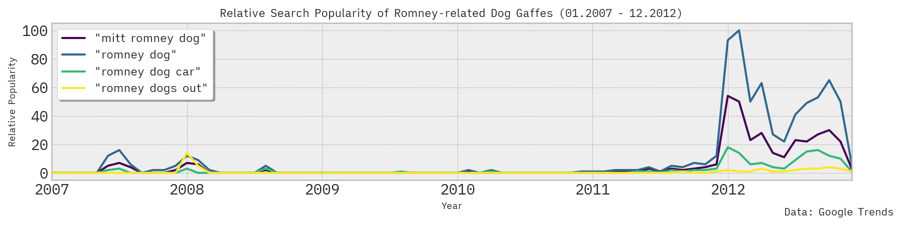

You may have been around when an incident concerning a young Romney was first brought to light in June 2007 by the Boston Herald, or when it was subsequently raised to national attention during his 2012 presidential campaign. If not, I’d like to introduce you to what’s formally known as the “Mitt Romney Dog Incident” [2].
It is 1983. Mitt Romney is a father, a businessman, not yet a political figure. Using only a late '70s station wagon, Romney must transport his brood, his luggage, and his dog from Massachusetts to Ontario for a family vacation – a 12 hour, ~650 mile drive. Something of a basic knapsack problem.
His demented solution was as follows:
1. Romney seats family (5 children and wife) and luggage in family station wagon
2. Romney straps dog (Seamus) to roof of station wagon in carrier featuring jury-rigged windshield
3. Begins trip to Ontario.
4. Seamus, most terrified dog in history, loses control of bowels, horrifying Tagg, son of Romney, when dog’s waste flows over car windows
5. Romney recalls existence of dog
6. Romney stops, hoses down station wagon, dog, and carrier
7. Romney replaces Seamus in carrier
8. Continues to Ontario.
epilogue. Dog flees Romney family upon arrival (disputed) [3]
At the time, a veterinarian suggested that Seamus experienced “high levels of stress” due to the consistency of his stool [5]. A tongue-in-cheek protest group was founded in response to the Herald article: simply, ‘Dogs Against Romney’ [6]. Republican opponent Rick Santorum referred to the Incident as an "issue of character” [7]. Even then-President Obama riffed on the theme during the White House Correspondents’ Dinner with a skit [8] that feels lifted from one of Michael Schur’s interminable shows. It was a perfect story. Everyone took a bite.
The sun rises in Massachusetts. It’s early morning. Father, where is Seamus? the children ask, yawning, as they climb in for the long drive. Don’t worry about Seamus, Romney says. Father has been up during the night. Get in the car. Seamus is just fine.
The family dog screams atop the station wagon, his terror lost in the howling wind. The car hurtles down the freeway. Seamus plays the only card he has left.
Alternatively, Mitt Romney could simply be a somewhat orthodox, detached man of brisk and cheerful callousness, more concerned with his ideas of action than with an animal’s incidental awareness of death.
The story had a brief, glorious moment where it dominated the zeitgeist – and has since had a long, long half-life. On a scale of Obama Latte Salute -> Watergate, I’d put it somewhere in the ‘guffaw zone’ i.e., low import, relative high impact.
What I find truly bizarre is that the Incident is merely pre-eminent among the ‘dog’ related controversies that arose during his long career. In 2008, he inexplicably recited the lyrics to the Baha Men’s ‘Who Let the Dogs Out’ during an MLK day parade [9], apparently to appeal to a group of Black voters. Last year, he proclaimed hot dogs to be his ‘favorite meat’ [sic] on Twitter [10]. The pretext was to promote ‘National Hot Dog Day’ – but I think it was a warning, or a reminder, that a hot dog can be made from many types of animal. This was not the first time he did this [11].
When looking at search trends, there are no surprises, with interest peaking during the height of his national relevance. That said, the Dog Incident has some staying power vs. these other ‘lesser’ Incidents Involving the Word Dog:
 Besides that… well, it’s tough to top one of the most deranged phrases of the past 20 years, even next to all of his other missteps and controversies:
‘Binders Full of Women’ [12] is unforgettable to those who know it and inscrutable to those who weren’t there, but the Dog Incident demands regular exhumation – it's fun for the whole family.
As 2012 – the last election before Trump – recedes further and further in the rear view mirror, Romney seems like a quaint, even nostalgic figure. It's (almost) sad. Romney is outmoded – one of few Republicans still standing in opposition to a totalizing, domineering force. Next to that, his departure feels less like a resignation and more like finally putting the dog to sleep.
He traded off claims of decency, tried his best to appear as a well-heeled and unimpeachable representative. One who spoke from the heart and owned a collection of reasonable tools (and a car elevator). But in my mind, at least, he was never able to shake the Dog Incident – a byword for that slightly unnerving, robotic quality that was his undoing again and again.
I will miss his aura of minor unease. I will miss his gaffes. I will miss his s#!%-fingered Midas touch - in which all he grasped turned to crap, even his dog.
Godspeed, Mitt - and good God, good luck. It really all very nearly worked out.
"Heard joke once: Man goes to doctor. Says he's depressed. Says life seems harsh and cruel. Says he feels all alone in a threatening world where what lies ahead is vague and uncertain. Doctor says, 'Treatment is simple. Great clown Mitt Romney is in town tonight. Go and see him. That should pick you up.' Man bursts into tears. Says, 'But doctor... I am Mitt Romney.' Good joke. Everybody laugh. Roll on snare drum. Curtains."